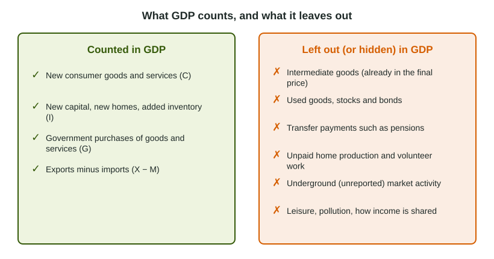

Limitations of GDP
GDP measures market production, so it leaves out nonmarket activity such as home production, the underground economy, the value of leisure and environmental damage, and it can miss quality gains.
Part 1 · Hook
Why this matters
Part 2 · Before you start
What this builds on
Part 3 · Prerequisite check
Quick check before you start
1. Which of these is counted in GDP?
- A haircut bought at a salon
- A used car bought from a neighbor
- A pension check from the government
- Shares of stock bought online
Show the answer
GDP counts new final goods and services sold at market value. Used goods, transfer payments and financial trades are left out.
- Correct: A haircut bought at a salon:
- A used car bought from a neighbor:
- A pension check from the government:
- Shares of stock bought online:
2. What does the expenditure approach add up?
- Consumption, investment, government purchases and net exports
- Every sale made in the economy
- Wages and transfer payments
- Exports and imports
Show the answer
- Correct: Consumption, investment, government purchases and net exports:
- Every sale made in the economy:
- Wages and transfer payments:
- Exports and imports:
Part 4 · See it
See it first

Part 5 · Step by step
How it works, step by step
- GDP counts only goods and services sold at a market priceunpaid home production, volunteer work and leisure are left out
- Some sales are paid in cash and never reportedthe underground economy is missed and measured GDP understates production
- GDP adds up spending without asking what it is forcleaning up pollution raises GDP while the damage itself is not subtracted
- A larger population makes total GDP larger on its ownGDP per capita (output divided by population) is used to compare living standards, though it hides how income is shared
Part 6 · Key ideas
Key ideas
- Nonmarket activity (cooking for your family, volunteering) and the underground economy (unreported cash work) are left out, so GDP understates production.
- GDP gives no value to leisure, does not subtract pollution, and can miss quality improvements.
- GDP per capita = GDP divided by population: the better measure for comparing material living standards.
- GDP per capita is an average: it says nothing about how income is shared, health or the environment.
Part 7 · Misconception
A common mistake
The wrong idea: A country with a bigger GDP has a higher standard of living.
What actually happens: Total GDP grows with population. Divide by population first, and remember GDP per capita still leaves out leisure, home production, the environment and how income is shared.
Part 8 · Check yourself
Check yourself
Exam-style questions. Anything you miss goes into your review queue.
Data
Output and population in three countries
| Country | GDP (billions of dollars) | Population (millions) |
|---|---|---|
| Halvet | 800 | 40 |
| Berovia | 300 | 10 |
| Cestia | 1,200 | 80 |
1. What is GDP per capita in Halvet, in dollars per person?
Type a number. A four-function calculator is allowed, as on the exam.
Show the answer
Divide GDP by population:
- Answer: 20,000
2. Which country in the table has the highest GDP per capita?
- Berovia, at about 30,000 dollars per person
- Cestia, because its total GDP is the largest
- Halvet, because it is in the middle on both counts
- They are equal once population is taken into account
Show the answer
GDP per capita divides output by the number of people, so a small country can produce more per person than a large one.
- Correct: Berovia, at about 30,000 dollars per person: Right:
, more than Halvet (20,000) or Cestia (15,000). - Cestia, because its total GDP is the largest: Cestia has the most output in total but twice as many people as Halvet, so only 15,000 per person.
- Halvet, because it is in the middle on both counts: Halvet's 20,000 per person is below Berovia's 30,000.
- They are equal once population is taken into account: Dividing each GDP by its population gives 20,000, 30,000 and 15,000: not equal.
Scenario
Three changes in Country Y
Three things happen in Country Y this year. (1) Omar quits his paid job as a cook at a restaurant to cook at home for his own family, as much food as before. (2) A chemical plant leaks into a river, and towns spend millions of dollars cleaning it up. (3) A new law gives every full-time worker two more weeks of paid vacation; people work fewer hours and say they are happier.
3. How does change (1), Omar cooking at home instead of at the restaurant, affect measured GDP?
- GDP stays the same, because the same amount of food is made
- GDP rises, because home cooking saves his family money
- GDP is unchanged, because household work is part of consumption
- GDP falls, though about as much food is cooked as before
Show the answer
GDP counts only market production. The same work done unpaid at home disappears from GDP, which is why home production makes GDP understate output.
- GDP stays the same, because the same amount of food is made: The food is still made, but no longer sold in a market, so GDP no longer counts it.
- GDP rises, because home cooking saves his family money: Saving money on meals is not production sold at a market price.
- GDP is unchanged, because household work is part of consumption: Consumption counts what households buy, not unpaid work they do for themselves.
- Correct: GDP falls, though about as much food is cooked as before: Right: his paid cooking was a market sale; cooking for his family is nonmarket activity, which GDP leaves out.
Scenario
Cash work in Country Z
In Country Z, many house painters, street vendors and tutors are paid in cash and never report the sales to the government. Officials estimate that this unreported work equals about a fifth of the output they measure. Country W, next door, has about the same production per person, but almost all of its sales are recorded.
4. How does the unreported cash work in Country Z affect its official GDP?
- It has no effect, because GDP is estimated from spending
- It lowers production, because cash work is illegal
- Official GDP understates what Country Z produces
- Official GDP overstates what Country Z produces
Show the answer
Activity in the underground economy is production that statisticians cannot see, so measured GDP is lower than actual production.
- It has no effect, because GDP is estimated from spending: Spending that is never recorded cannot be added in; the estimate misses it.
- It lowers production, because cash work is illegal: The work produces real goods and services; the question is whether GDP records it.
- Correct: Official GDP understates what Country Z produces: Right: the painting, selling and tutoring are real market production, but unrecorded sales are missed.
- Official GDP overstates what Country Z produces: Missing sales make the official number too low, not too high.
5. Why is GDP per capita a better measure than total GDP for comparing material living standards across countries?
- It subtracts the cost of pollution from output
- It adjusts for the number of people who share the output
- It includes the value of leisure and home production
- It shows how evenly income is shared within a country
Show the answer
A country with a larger population has a larger GDP for that reason alone; per capita figures remove the effect of size.
- It subtracts the cost of pollution from output: No version of GDP subtracts pollution.
- Correct: It adjusts for the number of people who share the output: Right: dividing by population gives output per person.
- It includes the value of leisure and home production: GDP per capita leaves those out, exactly as total GDP does.
- It shows how evenly income is shared within a country: It is an average and shows nothing about how income is shared.
6. In Country V, GDP rises 2% in a year while the population rises 3%. What happens to GDP per capita?
- It rises by 5%, adding the two percent changes
- It stays the same, because both GDP and population grew
- It falls: the population grew faster than output
- It rises by 2%, the same as the rise in GDP
Show the answer
GDP per capita rises only when output grows faster than population: here it falls by about 1%.
- It rises by 5%, adding the two percent changes: The population is in the denominator, so its growth pulls per capita output down.
- It stays the same, because both GDP and population grew: Both grew, but at different speeds, so the ratio changes.
- Correct: It falls: the population grew faster than output: Right: output per person falls when the number of people rises faster than output.
- It rises by 2%, the same as the rise in GDP: Per capita figures divide by population, which grew too.
Part 9 · Summary
Summary
Part 10 · Up next
What comes next
Part 11 · Connections